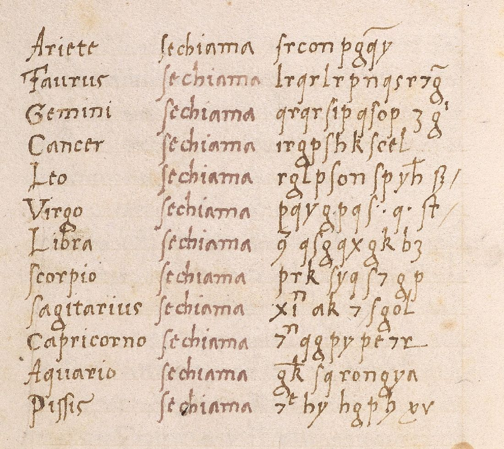
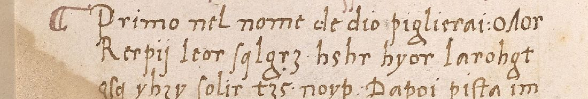
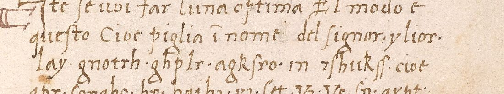
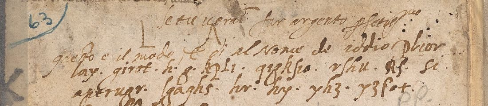

01 The book and where the cipher is
Mellon MS 29 has 33 leaves, written in red and black in an italic hand. It opens with an Italian prologue (ff. 1r–2v). Then comes Liber alkimistalis quem frater Elia edidit apud Imperatorem federicum … Incipit liber lumen luminum traslatus de sarracenico ac hebraico in latinum (ff. 3r–36r). Last are a Latin–Arabic synonym list and some Italian recipes (ff. 36r–37v). Every leaf was checked. The Latin treatise and the recipes are in clear, with only the usual ʒ and ℔ weight signs. The cipher is on four pages only.
- f. 1r, clear: the book was “experimentado nel 1315”. Its medicine serves the Sun and the Moon, whose names the author has hidden in two figures, a star and a reversed C with a p. Five bodies make sun and moon: Saturn, Jupiter, Mars, Venus and Mercury.
- f. 1v, clear: the medicines, “ouer nomi deli spiriti che lauano purgano et mondificano li corpi”, are Aries, Taurus, Gemini and the rest of the twelve signs. Then comes the Sol recipe: “Primo nel nome de dio piglierai:” followed by three lines of cipher, then in clear “Dapoi pista in mortaro et tritale in poluere minutissima … agiongerai ʒ che dir onze de leone”.
- f. 2r: the Luna recipe, “piglia i nomi del signor.”, followed by three lines of cipher that contain the clear words in and cioe. It goes on in clear: “… et scorpio et tauro et gemini piglia ʒ cioe drama 1”.
- f. 2v: the zodiac table, “Ariete se chiama …” for all twelve signs.
- Front pastedown, a later hand: the Luna recipe and the table copied again, with many variants, among clear notes in Italian and Latin. The notes gloss the planets (“sol significa oro, luna significa argento, saturno significa piombo … mercurio significa argento vivo”) but not the cipher.

02 The cipher text
The transcription is in mellon29/transcription.txt. It uses 3 for ʒ, 7 for the et-sign, 9 for the con-sign and B for ß. Q with a straight tail is kept apart from looped g. Agnieszka Rec (2014) quotes Cancer and Scorpio as “irgp∫hk∫cel” and “prk∫yq∫7gp”, which agrees on the long s and the et-sign. The q/g split is not certain, so every test was run with and without it.


| Sign | “se chiama” | Sign | “se chiama” |
|---|---|---|---|
| Ariete | srcon pggy | Libra | 9 qsgqxqkb3 |
| Taurus | lrqrlrpnqsr7g̃ | Scorpio | prk syqs7qp |
| Gemini | qrqrsipqsop 3g | Sagitarius | xin ak 7 sqol |
| Cancer | irqpshkscel | Capricorno | 7n qqpypt7r |
| Leo | rqlpsonspyh B | Aquario | qk sqrongya |
| Virgo | pqyqpqs. q. st | Pissis | 7t by hqph yv |
The index of coincidence is 0.075 in the table and 0.075 in the recipe lists, a language-like value. The two parts differ, however. q is 17% of the table and under 2% of the lists, and h 3% against 10%. Sukhotin’s vowel test picks q as the main vowel in one part and r in the other. Some shapes are very hard to get from real words under a fixed substitution: Virgo’s pqyqpqsqst has q in every second place, and Taurus and Gemini both begin ?r?r (lrqrlr, qrqr).

03 What was tried
- Simple substitution by annealing with the
lang/4-gram models (Italian 1490–1620, modern Italian, Latin). Runs were made with and without word division, with q and g split and merged, and with the table and lists together and apart. The best was −4.0 per letter, which is gibberish. Control: a 206-letter Italian ingredient list (“sale armoniaco onze una, argento vivo …”) under a random key comes out at −2.6 and nearly word-perfect. A simple substitution of Italian would have been found. - Homophonic (many letters for one): gibberish.
- Caesar and Trithemius progressive shifts for each entry, over five alphabets (with ʒ = z and 7 = &), steps 0, ±1 and ±2: nothing.
- Vigenère, periods 2–7, with the key running or restarting at each entry: nothing beyond overfitting.
- Reversed words; every other letter a null: nothing.
- Alberti’s cipher disk. The cipher letters include k, y, h and an et-sign, and two capitals (R, V) sit inside the runs. That is how Alberti’s movable lower-case ring and index capitals look. His published ring was tried on each segment. Then an unknown ring was annealed together with a separate setting for each of 19 segments. No plaintext came out, even with that much freedom.
- A sibling manuscript. Sarah Lang’s survey of alchemical cipher manuscripts lists one Italian codex with the Elian texts: Manchester, John Rylands Latin MS 65 (15th century). All 449 images were checked. It has the Latin Lumen luminum but not the Italian prologue. Its “cipher table” is a pseudo-Lullian Tabula alphabetorum Raymundi, in which single letters stand for substances (E vitriol, F saltpetre, G cinnabar). Taken that way, the Mellon strings become formulas of ten or more ingredients with letters repeated inside one name, which gives no sense.
- Word patterns against about 170 Italian names of salts, metals, minerals, numbers and weights, with a consistent key required across the table: no fit. Only one name, cristallo, even matches Ariete’s letter pattern.
04 What it probably is, and what would finish it
If the strings are a real cipher, it is a private system with changing alphabets or whole-name code words. About 234 letters in fourteen short units are too few to rebuild such a system without a clear copy. The alternative fits the book as well. The strings may be invented “names” that look like a secret to a buyer: the book is credited to the Franciscan general, backdated by two centuries, bound under an IHS stamp, and says it hides even the names of Sun and Moon in “figures”. The Beinecke catalogue description already suggests “the intention to deceive a pious but gullible devotee”. Rec (2014) called the table a code and left it aside. The later owner who copied it onto the pastedown did not decipher it either. Another manuscript of this Italian Elias prologue with the recipes in clear would settle it. None was found.
05 Sources
- Beinecke Rare Book and Manuscript Library, Mellon MS 29, Lumen luminum, etc., full colour images at Yale Digital Collections (front pastedown and ff. 1r–2v are images 2–6). The same images are on DECODE, record R2877 (login).
- Beinecke Library, catalogue description of Mellon MS 29, Beinecke pre-1600 manuscripts.
- Agnieszka Rec, “Ciphers and Secrecy Among the Alchemists: A Preliminary Report”, Societas Magica Newsletter 31 (Fall 2014), note 8.
- Manchester, John Rylands Library, Latin MS 65; Sarah Lang, “Sources of Alchemical Cryptography” (University of Tartu repository).
- Paolo Galiano, “I codici manoscritti di Frate Elia”, Simmetria Institute (quotes the prologue from the Beinecke description); ed., Lumen luminum ad Fredericum imperatorem (Simmetria, 2021), not seen.
Transcription, solver scripts, notes and profile: mellon29/.